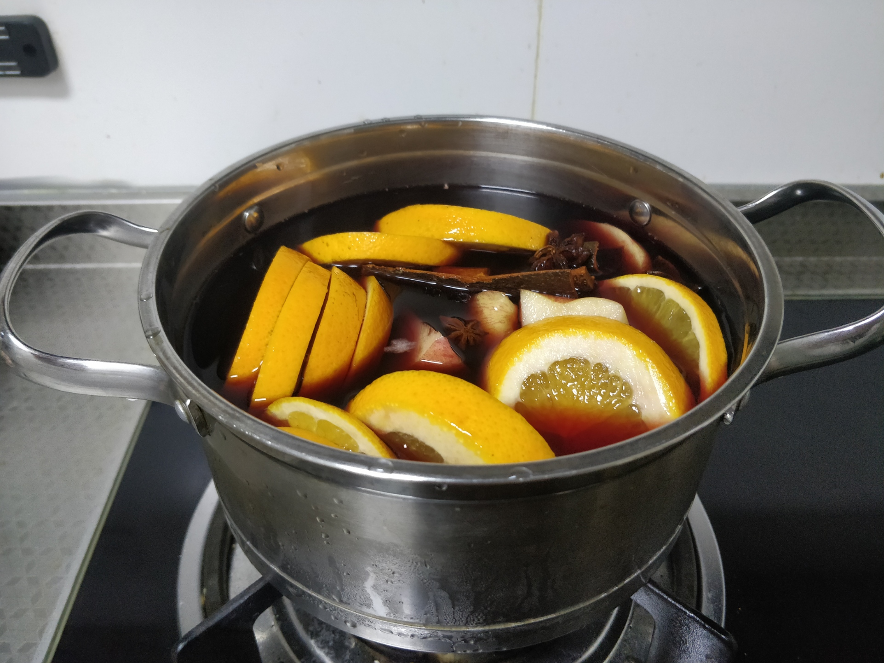
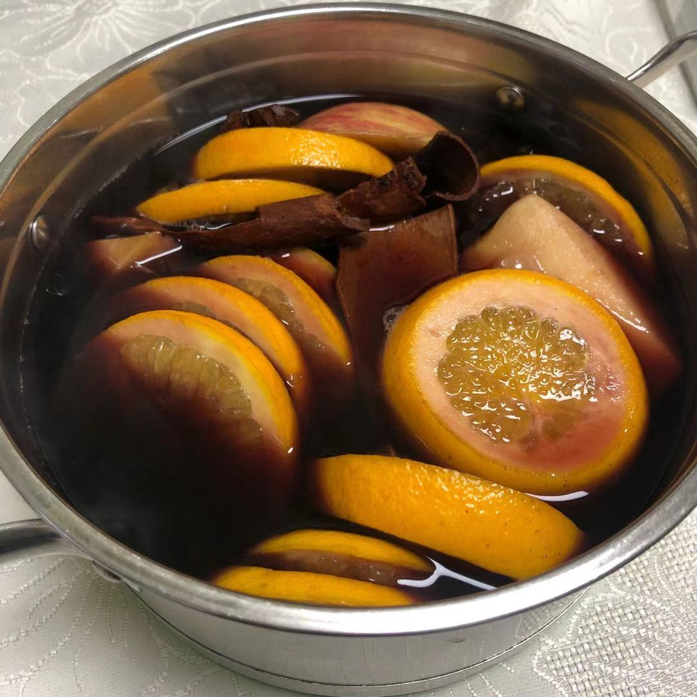
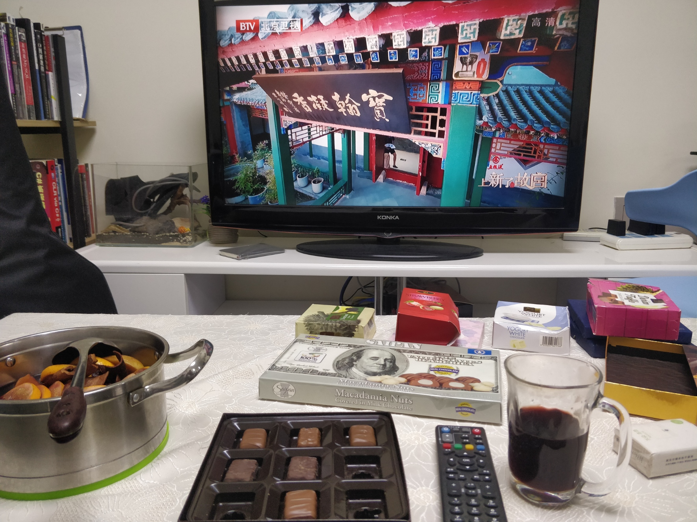
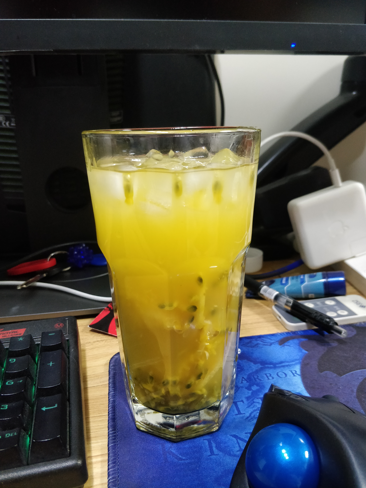

昨天晚上做了一份冬日特饮，热红酒，特地以此记录下来。
热红酒：
红酒一瓶 橙子 两个 柠檬半个 苹果 两个 肉桂 5g 丁香 5g 桂皮 5g 八角 2g （丁香没有买到，所以没加）

小火加热十分钟到二十分钟


暖暖和和的冬日特饮就完成了。
蜂蜜柠檬百香果茶
准备材料：百香果掏空，取果肉，柠檬切片去籽， 蜂蜜、玻璃罐
一层蜂蜜、一层百香果、一层柠檬，依次叠加放满玻璃罐，直到材料用尽。腌制取用需三天以上。
注意事项：柠檬放的多会导致苦味较重。

使用之前用蜂蜜打底，直接冲泡会是酸的，加冰味更佳，爽翻。